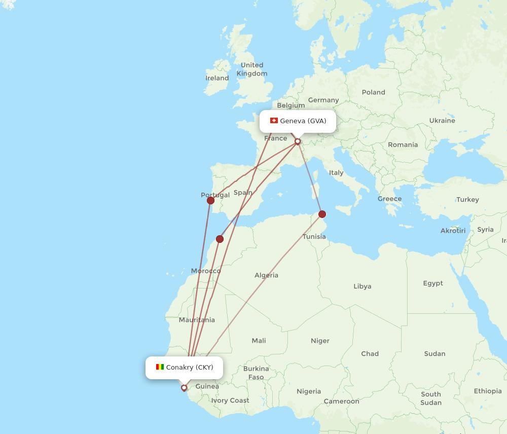
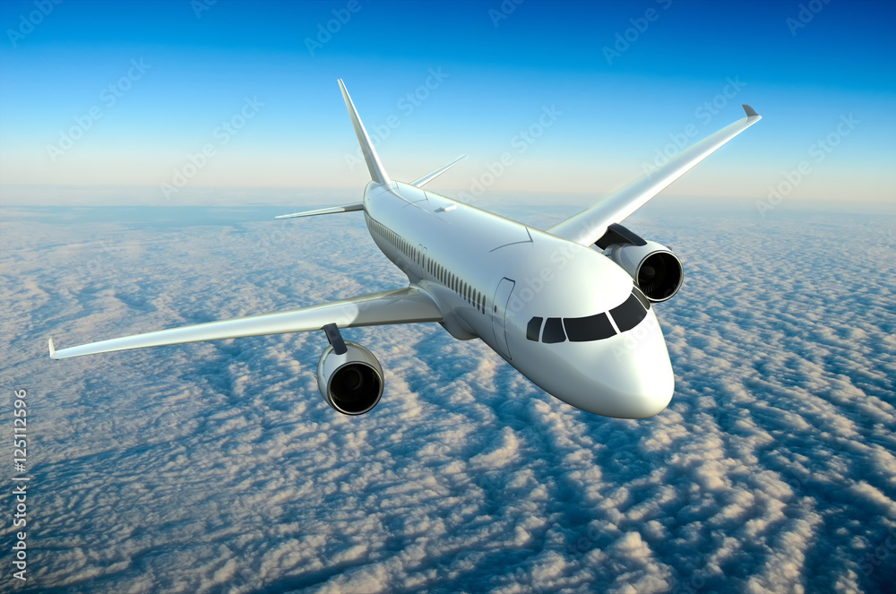

Introduction:
La Guinée est un pays d'Afrique de l'Ouest, reputé pour ces paysage et sa gastronomie. Depuis Genève, il existe plusieurs possibilités pour aller en Guinée comme l'avion mais il y a d'autre possibilité.
Carte du trajet Genève-Conakry
Voici une carte qui présente le trajet entre Genève et Conakry, avec une escale possible à Casablanca.

Moyens de transport depuis Genève
Avion
- Départ: Aéroport international de Genève.
- Arrivée: Aéroport international Ahmed Sékou Touré.
- Distance: environ 5000 km.
- Durée: environ 9 à 12 heures avec une escale
- Escales possibles: Casablanca, Paris, Bruxelles ou Tunis.
- Prix: environ 400 à 600 CHF aller-retour, selon la saison et la compagnie.

Voiture
- Départ: Genève, Suisse.
- Arrivée: Conakry, Guinée.
- Distance: plusieurs kilomètres, selon l'itinéraire.
- Péages: possibles dans les pays traversés.
- Durée: plusieurs jours selon l'itinéraire.